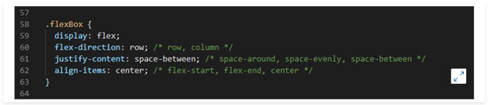
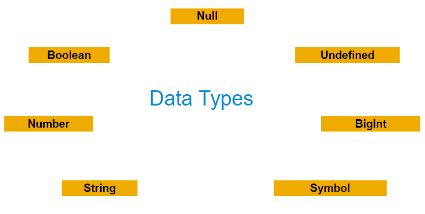
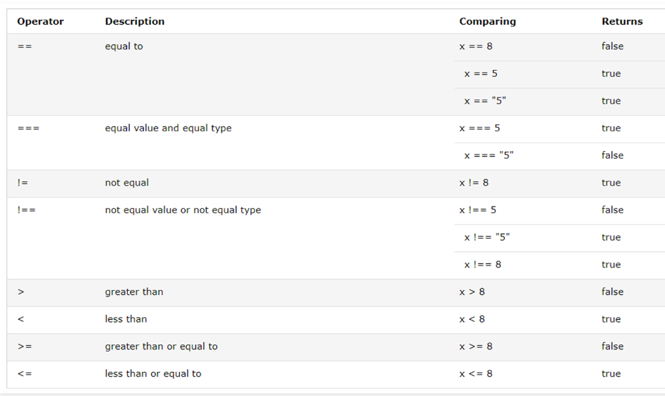
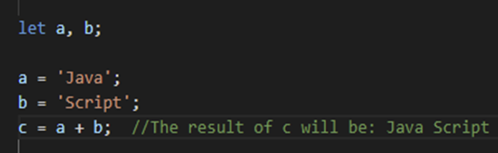

Introducing HyperText Markup Language (HTML)
Overview
HTML (HyperText Markup Language) was developed in 1990 by web founder, Tim Berners-Lee. It is a markup language. This markup language is used to describe the logical components of a text-oriented document. In web design, attempts are made to organise page structuring and text structuring according to semantic aspects. HTML enables typical elements of a text-oriented document - such as headings, text paragraphs, lists, tables, or graphic references - to be correctly delineated.
At the beginning of its development, only a few HTML elements were available to the creators of web pages, which was also reflected in a corresponding simplicity of web pages. Early approaches included the insertion of images, which were also used in the form of graphic texts for headings.
In recent years, internet consumption has shifted away from desktop computers to mobile devices, which can be used while travelling as well as sitting on the couch at home.
HTML5 is the latest and most enhanced version of HTML. Technically, HTML is not a programming language, but rather a markup language. In this course, we will discuss the features of HTML5 and look at how to use it in practice. HTML5 introduces a number of new elements and attributes that can help you to built modern, accessible websites.
HTML
The following is a set of some of the most prominent features introduced in HTML5:
- New Semantic Elements: These are like <header>, <footer>, and <section>.
- Forms 2.0: These are improvements to HTML web forms, where new attributes have been introduced for the <input> tag.
- Persistent Local Storage: To achieve without resorting to third-party plugins.
- WebSocket: A next-generation bidirectional communication technology for web applications.
- Audio and Video: You can embed audio or video on your webpages without resorting to third-party plugins.
- Geolocation: Now visitors can choose to share their physical location with your web application.
- Drag and drop: Drag and drop the items from one location to another location on the same webpage.
A reference video tutorial for HTML is linked below:
HTML Events
An HTML event can be something that the browser does, or something that a user performs. Events are a part of the Document Object Model (DOM) Level 3 and every HTML element contains a set of events that can trigger JavaScript Code.
Here are some examples of HTML events:
- An HTML web page has finished loading
- An HTML input field was changed
- An HTML button was clicked
Browser APIs
Browser APIs are built into your web browser, and are able to expose data from the surrounding computer environment, or they can perform useful complex tasks.
Here are examples of browser APIs:
- The Document Object Model (DOM) API allows you to manipulate HTML and CSS, creating, removing, and changing HTML, dynamically applying new styles to your page, and so on. You see a manifestation of this every time you see a popup window appear on a page, or some new content displayed.
- The querySelector() method of the document returns the first element within a document that matches the specified selector or selectors.

- The Geolocation API retrieves geographical information. This is how Google Maps can discern your location and plot it on a map.
- Third-party APIs are not built into the browser by default, and you generally have to grab their code and information from somewhere on the web.
- These are examples of third-party APIs: the Google Maps API and the OpenStreetMap API, which allow you to embed custom maps in your website.
You will learn more about this in the chapter about JavaScript.
Cascading Style Sheets (CSS)
Units
HTML is a language that is displayed on many different devices, from smartphones to tables or notebooks and ultra-wide monitors. This means that not every font or element size can be specified by an absolute unit such as cm, mm, in (inches), or px (pixel). As well as absolute units, CSS also has relative units as follows:
- em
Relative to the font size of the element (2em means 2 times the size of the current font).
- Rem
Relative to the font size of the root element (
<html>). - Vw
Relative to 1% of the width of the browser window.
- Vh
Relative to 1% of the height of the browser window.
- %
Relative to the parent element.
All sizes that can be specified in CSS can be specified with both absolute and relative sizes.
Note:
It is always recommended to use relative sizes if possible, because they require less adjustment effort when a web page is displayed on different devices.
Margin / Padding
Margin and Padding are the outer and inner distances of an element. Margin defines the distance to the next element. Padding manipulates the actual size of the element. The distance that Padding adds is also colored by, for example, the background color.
Margin and Padding are defined in the box model, which was explained in the HTML chapter.Margin and padding can be set both implicitly and explicitly on the element pages.
Text Styling
CSS provides a variety of ways to customize the appearance of text, Simple adjustments like changing the text size or adjusting the font work with the CSS instructions font-size and font-family.
There are also many other options to customize text appearance, including the following:

Layouts
Through the box model and the standard flow layout of HTML, as well as margin and padding, you already have a number of ways to design a web page. However, this is not always enough to make the structure and appearance of the web site exactly as you want it.
Flex Display
FlexBox is based on a container (flex container), in which several elements (flex items) are placed. Certain properties, such as alignment, are inherited by the flex items; the items are the actual flex boxes, which contain their flexibility by being inside the container.
The two axes each have one direction. Usually, the main axis runs from left to right, the cross axis from top to bottom. FlexBox is described as a one-dimensional system. Elements can be arranged either in rows or in columns. This arrangement can be specified in several ways. Possible layouts include:
justify-content(main-axis) : space-between, space-around, or space-evenly.
align-items(other-axis) : flex-end, flex-start, or center.
The axis will be switch with flex-direction, so items will also be changed from a row layout to a column layout
These define the dynamic distance between all flex items. Therefore, responsive layouts can be created very quickly.
JavaScript(JS)
Introduction
JavaScript is a scripting language that is usually used in websites and is then executed by the visitor's browser. Originally, in 1995, JavaScript was still called LiveScript. It was developed by Netscape.
JavaScript ensures that web pages can be built dynamically and adapted to the user. Complex control queries can be programmed in JavaScript and linked to backend services to check the entries of the visitors. Extensive browser games are written in JavaScript.
JavaScript is a cross-platform, object-oriented scripting language. It is a compact and resource-saving language. Within a host environment, JavaScript can be linked to the objects in its environment to control them programmatically.
Variables
characters
Variables are used to store values. In the process, a variable is given a name, called an identifier or identifier, which follows certain rules.
A JavaScript identifier must begin with a letter. There is a best practice for naming functions and variables, which introduced the underscore (_) for private variables and methods, as the concept of visibility of methods was never implemented. The following characters can also be numbers. Since JavaScript is case-sensitive thus "B" represents a different letter than "b".
Most of the ISO 8859-1 and Unicode characters can be used, such as ü or å, but Unicode escape sequences can also be used.
For using Unicode characters, the html site needs to have the charset defined as an meta tag.
There are three ways for declaring an variable(identifier):
- let: Using let allows you to declare variables that are limited to the scope of a block statement, or the expression on which it is used, unlike the var keyword, which declares a variable globally, or locally to an entire function regardless of block scope. The other difference between var and let is that the latter is initialized to a value only when a parser evaluates it.
- const: One can create a read-only named constant with the keyword const. The syntax for a constant identifier is the same as for variable identifiers: it must begin with a letter, can contain alphabetic characters, numeric characters and underscores. The value of a constant cannot be changed at runtime by assignments or new declarations. Therefore, constants must always be initialized. You cannot declare a constant with the same name as a function or variable in the same scope.
Data Types
JavaScript is a dynamically typed language. This means that you do not specify the data type of a variable when you are declaring it. The data type is automatically converted during execution, if necessary.
The latest ECMAScript standard defines seven data types.
The following seven data types are primitive data types:
Note:
Object: Although the number of data types is relatively small, they open up the possibility of creating useful functions for applications. Objects and functions are the other fundamental elements of the language. Objects can be thought of as named containers for values and functions that the application can execute.
Comparision Operator
A comparison operator compares its operands and returns a logical value based on whether the comparison is true or not.
The operands can be numeric, string, logical, or object values. Strings are compared to Unicode values based on the standard lexicographic order. If the two operands are not of the same type, JavaScript will in most cases attempt to convert them to a suitable type for comparison. This behavior generally results in the operands being compared numerically. The only exceptions to type conversion within comparisons are the operators === and !==, which perform strict comparisons. These operators do not attempt to convert the operands to compatible types before checking equality.
Arithmetic Operations
An arithmetic operator takes numeric values (literals or variables) as operands and returns a single numeric value. The standard arithmetic operators are addition (+), subtraction (-), multiplication (*) and division (/). These operators work as in most other programming languages when used with floating point numbers (note in particular that division by zero gives infinity).
In addition to the standard arithmetic operators (+, -, * /), JavaScript provides other arithmetic operators.
String Operator
In addition to the comparison operators, which can be used on string values, the concatenation operator (+) concatenates two string values together, returning another string that is the union of the two operand strings.
Bitwise Operators
A bitwise operator treats its operands as a set of 32 bits (zeros and ones) rather than decimal, hexadecimal, or octal numbers - for example, the decimal number nine has a binary representation of 1001. Bitwise operators perform their operations with such binary representations, but they return standard numeric JavaScript values.
Arrays
Arrays are generally described as "list-like objects". They are basically single objects that contain multiple values stored in a list. Array objects can be stored in variables and dealt with in much the same way as any other type of value, the difference being that we can access each value inside the list individually, and do extremely useful and efficient things with the list, like loop through it and do the same thing to every value. Maybe we have got a series of product items and their prices stored in an array, and we want to loop through them all and print them out on an invoice while totaling all the prices together and printing out the total price at the bottom.
Arrays consist of square brackets and items that are separated by commas.
let fruits = ['Apple' , 'Banana']